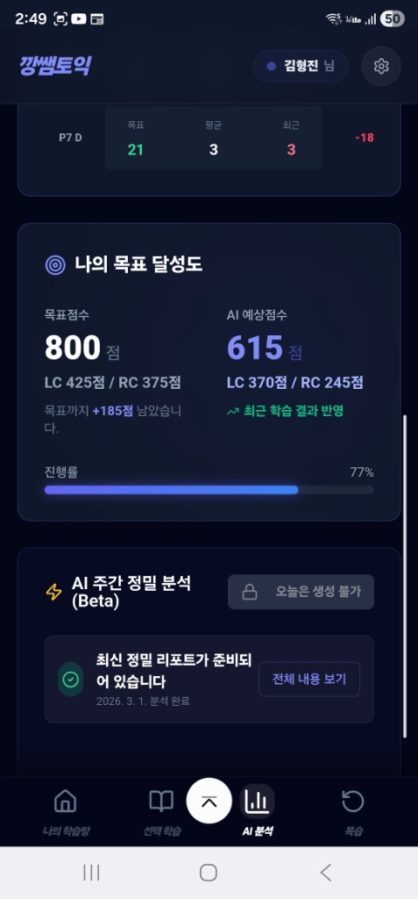
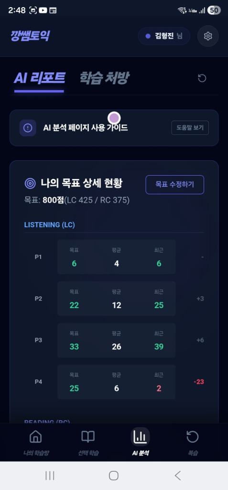
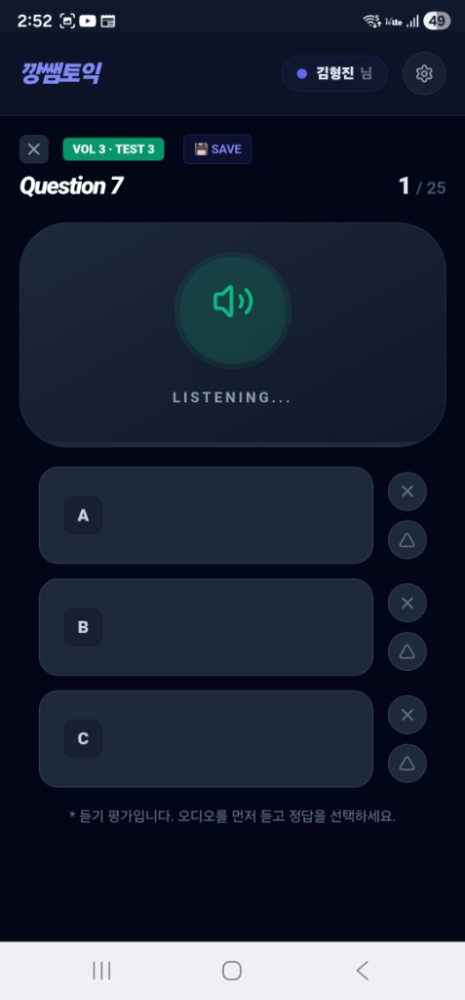
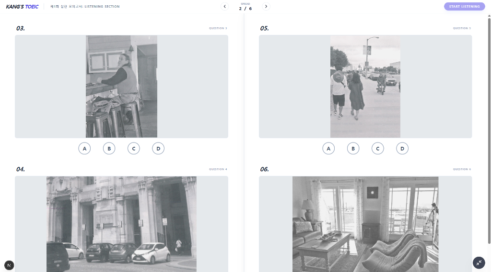

수동적인 인강, 끝나면 휘발되는 오프라인 수업만으로는 부족합니다.
당신의 오답 데이터는 수업이 끝난 후에도 살아있어야 합니다.
한 번 틀린 문제는 AI가 필사적으로 따라붙습니다. '아는 것'과 '안다고 착각하는 것'을 데이터로 분리합니다.
PC 전용 UI로 실제 고사장과 동일한 환경을 제공합니다. 클릭 한 번, 스크롤 한 번까지 실전입니다.
수업 중 다룬 핵심 문법이 숙제 앱에서 즉시 반복됩니다. 깡쌤의 커리큘럼이 앱 속으로 들어왔습니다.
오늘 배운 내용을 정말 이해했는지 35분간의 압축 진단을 수행합니다.
선생님은 수강생 전원의 성적 데이터를 실시간으로 모니터링하여 다음 수업의 난이도를 조절합니다.

"수업만 들을 때는 다 아는 것 같았는데, 끝나자마자 앱으로 하프테스트를 치니까 제 취약점이 확연히 드러나더라고요. 깡쌤이 바로 그 데이터를 보고 제 숙제를 지정해주셨습니다."
앱은 당신이 수업 중 가장 많이 망설였던 '파트 5의 수일치' 문제를 기억합니다.
매일 제공되는 커스텀 드릴은 당신의 오답 패턴만을 집요하게 공격합니다.

단순 암기가 아닙니다. 깡쌤 수업의 빈출 유의어와 파생어가 예문 중심의 4단계 학습법으로 자동 반복됩니다.

고사장에 가기 전, 120분의 긴장을 미리 경험하십시오.
이중 지문 파악부터 LC 그림 문제까지 PC 화면을 통해 실제 시험과 100% 동일한 동선으로 훈련합니다.

"UI 적응만으로 50점이 올랐습니다."
PC 전용 뷰어로 이중/삼중 지문을 한눈에 분석하는 훈련이 실전에서 결정적인 시간 단축을 가져왔습니다.
당신의 토익 공부는 이제 과거와는 전혀 다른 차원으로 이동합니다.
점수로 증명되는 깡쌤만의
독보적인 시너지 시스템.
* 본 시스템은 깡쌤토익 정규 수강생에게만 제공되는 프리미엄 서비스입니다.